Información General del Proyecto
Ciclo Educativo: V
Grado(s): 10° y 11°
Áreas STEAM Integradas

Áreas Transversales: Lenguaje (documentación técnica, manuales de usuario, comunicación con usuarios), Ciencias Sociales (comprensión de dinámicas comunitarias, ética digital, impacto social de la tecnología), Emprendimiento (si se considera la sostenibilidad de la solución).
Idea Central del Proyecto
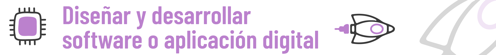Diseñar y desarrollar una solución de software o aplicación digital (web, móvil, de escritorio) que responda de manera innovadora y efectiva a una necesidad o problema específico identificado dentro de la comunidad escolar o local, utilizando lenguajes de programación y herramientas de desarrollo adecuadas.
Problema o Desafío del Contexto a Abordar
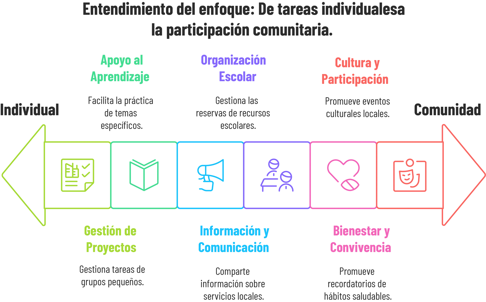Los estudiantes, mediante un proceso de indagación comunitaria y análisis de necesidades, identificarán y definirán un problema o desafío en su entorno que pueda ser significativamente mitigado o resuelto a través de una solución de software programada por ellos.
Ejemplos de posibles áreas de desafíos (los estudiantes elegirán uno específico):
- Organización Escolar/Comunitaria: Sistema de reserva de espacios o recursos (biblioteca, canchas, laboratorios), agenda de eventos comunitarios, plataforma de anuncios clasificados para la escuela.
- Apoyo al Aprendizaje: Herramienta para practicar un tema específico (ej. vocabulario, fórmulas matemáticas), plataforma para compartir recursos de estudio, sistema de tutorías entre pares.
- Información y Comunicación: Directorio digital de servicios locales, aplicación informativa sobre temas de interés comunitario (ej. rutas de transporte, puntos de reciclaje), sistema de encuestas o feedback para la institución.
- Gestión de Proyectos Pequeños: Herramienta simple para la gestión de tareas de clubes estudiantiles o pequeños proyectos comunitarios.
- Bienestar y Convivencia: Aplicación para reportar incidencias de manera anónima (si se maneja éticamente), plataforma para organizar actividades de integración, recordatorios de hábitos saludables.
- Cultura y Participación: Plataforma para promover eventos culturales locales, sistema de votación simple para decisiones escolares, juego educativo sobre historia local.
Objetivos del Proyecto
Objetivo General
Desarrollar un prototipo funcional de una solución de software que aborde una necesidad comunitaria identificada, aplicando el ciclo de vida del desarrollo de software, el pensamiento algorítmico y los principios de programación, mientras se fortalecen las competencias de indagación para el análisis de requerimientos y la argumentación matemática para la justificación de diseños lógicos y la eficiencia de las soluciones.
Objetivos Específicos de Aprendizaje
OE1 (Ciencia - Tecnología - Indagación): Aplicar un proceso de indagación para identificar y analizar a fondo una necesidad o problema comunitario, definiendo requerimientos claros para una solución de software y evaluando su usabilidad mediante pruebas con usuarios.
EBC Tecnología e Informática (Grados 10-11):
- "Naturaleza y Evolución de la T&I": Construyo conocimientos y saberes de base tecnológica e informática para la toma de decisiones en el desarrollo de productos tecnológicos; Evalúo las maneras en que los procesos de innovación, investigación, desarrollo y experimentación producen nuevos saberes y conocimientos...
- "Solución de problemas con T&I": Propongo innovaciones tecnológicas e informáticas para la solución de problemas dando cumplimiento a restricciones y especificaciones técnicas y contextuales; Identifico condiciones, especificaciones y restricciones de diseño, utilizadas en una solución tecnológica o del campo de la informática verificando su cumplimiento en diversos contextos.
Competencia de Indagación (Adaptada al contexto de desarrollo de software): Observar y analizar necesidades de usuarios, formular preguntas para elicitar requerimientos, consultar fuentes sobre soluciones existentes, plantear hipótesis sobre la utilidad de ciertas funcionalidades, diseñar pruebas de usabilidad, recolectar feedback de usuarios, organizar y analizar ese feedback para iterar el diseño.
Habilidad del Siglo XXI: Pensamiento Crítico, Resolución de Problemas, Alfabetización de Datos (feedback de usuarios).
OE2 (Tecnología - Ingeniería - Matemáticas): Diseñar la arquitectura lógica y la interfaz de usuario de una solución de software, y desarrollar un prototipo funcional utilizando un lenguaje de programación y herramientas de desarrollo apropiadas, aplicando el pensamiento algorítmico.
EBC Tecnología e Informática (Grados 10-11):
- "Naturaleza y Evolución de la T&I": Genero propuestas innovadoras para el uso y aprovechamiento de los recursos tecnológicos; Utilizo adecuadamente herramientas informáticas para la búsqueda, organización, procesamiento, sistematización, comunicación y difusión de ideas.
- "Solución de problemas con T&I": Diseño y aplico planes sistemáticos de mantenimiento correctivo en productos tecnológicos analógicos y digitales utilizadas en la vida diaria (conceptual, aplicado al software); Diseño, construyo y pruebo prototipos de artefactos, sistemas o procesos (software) como respuesta a una necesidad o problema...
EBC Matemáticas (Grados 10-11) (Aplicado a la lógica y algoritmos):
- "Pensamiento Numérico y Sistemas Numéricos" (uso de variables, tipos de datos)
- "Pensamiento Variacional y Sistemas Algebraicos y Analíticos" (representación de relaciones lógicas, funciones en programación).
Habilidad del Siglo XXI: Pensamiento Computacional, Creatividad, Diseño Tecnológico.
OE3 (Matemáticas - Argumentación): Utilizar la lógica matemática y la argumentación para justificar el diseño de algoritmos, la estructura de datos elegida (si aplica), la funcionalidad implementada, y para analizar la correctitud y (opcionalmente) la eficiencia básica de la solución programada.
EBC Matemáticas (Grados 10-11):
- (Los EBC se aplican en la estructuración lógica del pensamiento para programar, en la validación de secuencias y condiciones).
- "Pensamiento Aleatorio y Sistemas de Datos" (si la app maneja datos y se requiere análisis estadístico simple de su uso o efectividad).
Competencia de Argumentación (Adaptada a la programación): Validar la lógica de un algoritmo o fragmento de código, plantear afirmaciones sobre el comportamiento esperado del software bajo ciertas entradas, argumentar a favor de una estructura de control (if/else, bucles) específica para resolver un subproblema, establecer la validez de los resultados producidos por el software.
Habilidad del Siglo XXI: Pensamiento Crítico, Razonamiento Lógico, Comunicación.
OE4 (Arte - Comunicación - Colaboración): Diseñar una interfaz de usuario intuitiva y estéticamente agradable, colaborar efectivamente en equipo durante el ciclo de desarrollo, y comunicar la solución, su propósito y funcionamiento a diferentes audiencias.
EBC Tecnología e Informática (Grados 10-11): "Tecnología, Informática y Sociedad": Participo en deliberaciones argumentadas relacionadas con las aplicaciones e innovaciones tecnológicas e informáticas en diversos campos; Evalúo los problemas que afectan directamente a mi comunidad...
Habilidad del Siglo XXI: Colaboración, Comunicación, Creatividad, Alfabetización Digital.
Fases del Proyecto (ABP)
- Fase 1: Conectando Códigos - La Tecnología al Servicio de la Gente
- Fase 2: Desarrolladores en Misión - Definiendo Nuestro Reto Digital
- Fase 3: Arquitectos de Software - Diseñando la Lógica y la Experiencia
- Fase 4: ¡A Programar se Dijo! - Construyendo el Prototipo Funcional
- Fase 5: Depurando el Futuro - Pruebas, Feedback y Argumentos de Código
- Fase 6: ¡Lanzamiento Comunitario! - Presentando Nuestra Solución Digital
- Fase 7: Código Fuente de Aprendizaje - Reflexionando sobre el Viaje del Desarrollo
Actividades Detalladas por Fase
- Fase 1: Conectando Códigos - La Tecnología al Servicio de la Gente
- Fase 2: Desarrolladores en Misión - Definiendo Nuestro Reto Digital
- Fase 3: Arquitectos de Software - Diseñando la Lógica y la Experiencia
- Fase 4: ¡A Programar se Dijo! - Construyendo el Prototipo Funcional
- Fase 5: Depurando el Futuro - Pruebas, Feedback y Argumentos de Código
- Fase 6: ¡Lanzamiento Comunitario! - Presentando Nuestra Solución Digital
- Fase 7: Código Fuente de Aprendizaje - Reflexionando sobre el Viaje del Desarrollo
Actividades Detalladas por Fase
Fase 1: Conectando Códigos - La Tecnología al Servicio de la Gente
Actividad 1.1: Innovadores Digitales en Acción - ¡Software con Alma!
¿Qué vamos a hacer?
- Exploraremos ejemplos inspiradores de aplicaciones y software (desarrollados incluso por jóvenes) que han tenido un impacto social positivo en diversas comunidades (educación, salud, medio ambiente, organización comunitaria).
- Discutiremos: ¿Cómo puede un programa de computador o una app móvil mejorar la vida de las personas o resolver un problema en nuestra escuela o barrio?
- Haremos una lluvia de ideas inicial sobre tipos de problemas locales que podrían beneficiarse de una solución digital.
¿Por qué es importante? Para entender que programar no es solo escribir código, sino una herramienta poderosa para crear soluciones útiles y con propósito, y para empezar a pensar como desarrolladores con conciencia social.
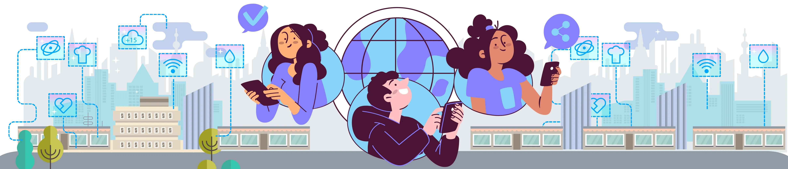Actividad 1.2: Radar Comunitario - Sintonizando con las Necesidades Digitales
¿Qué vamos a hacer?
- Realizaremos una "escucha activa" en nuestra comunidad escolar: observaremos procesos, hablaremos con compañeros, profesores, personal administrativo (con permiso y respeto) para identificar tareas repetitivas, problemas de comunicación, falta de acceso a información, o necesidades no cubiertas que podrían simplificarse o mejorarse con software.
- Anotaremos estas observaciones, pensando en posibles "entradas", "procesos" y "salidas" de una hipotética solución digital.
¿Por qué es importante? Para comenzar el proceso de Indagación enfocado en el usuario y el contexto, identificando problemas reales desde la perspectiva de quienes los viven.
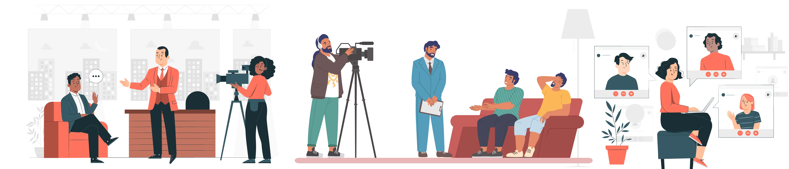Fase 2: Desarrolladores en Misión - Definiendo Nuestro Reto Digital
Actividad 2.1: Equipos de Desarrollo Ágil
¿Qué vamos a hacer?
- Formaremos equipos de desarrollo (3-4 estudiantes), idealmente con una mezcla de intereses (algunos pueden inclinarse más al diseño de interfaz, otros a la lógica de programación, otros a la gestión del proyecto).
- Definiremos roles iniciales (ej. Product Owner/Analista, Diseñador UX/UI, Desarrollador Líder, Tester/Documentador) que pueden ser rotativos.
¿Por qué es importante? Para simular un entorno de desarrollo colaborativo y distribuir responsabilidades, aprendiendo a trabajar en un proyecto de software como equipo.
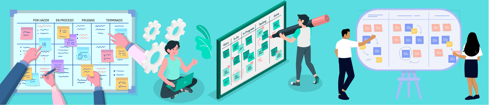Actividad 2.2: Del Problema Observado a la Especificación de Requerimientos (Indagación y Análisis)
¿Qué vamos a hacer?
- En equipo, revisaremos las necesidades identificadas en la Fase 1 y seleccionaremos 1-2 problemas que consideremos más viables y de mayor impacto para desarrollar una solución de software.
- Profundizaremos la Indagación para el problema elegido:
- Definir Usuarios Clave: ¿Quiénes usarán nuestra aplicación? ¿Cuáles son sus características y necesidades tecnológicas?
- Elicitar Requerimientos Funcionales: ¿Qué DEBE HACER la aplicación? (Ej. "El sistema debe permitir al usuario registrarse", "La app debe mostrar un calendario de eventos").
- Elicitar Requerimientos No Funcionales (básicos): ¿Cómo debe ser la aplicación? (Ej. "Debe ser fácil de usar", "Debe cargar rápido", "Debe ser compatible con móviles Android").
- Priorizaremos los requerimientos para definir el alcance de un Producto Mínimo Viable (MVP).
- Redactaremos un "Documento de Visión del Producto" o "Especificación de Requerimientos Básica" para nuestra solución.
¿Por qué es importante? Para asegurarnos de que entendemos claramente qué vamos a construir y para quién, antes de escribir una sola línea de código. Una buena definición de requerimientos es clave para el éxito de cualquier software. ¡La Indagación aquí es crucial para no programar algo que nadie necesita o quiere!
Fase 3: Arquitectos de Software - Diseñando la Lógica y la Experiencia
Actividad 3.1: Diseño de Algoritmos Clave (Pseudocódigo/Diagramas de Flujo)
¿Qué vamos a hacer?
- Para las funcionalidades principales de nuestro MVP, diseñaremos los algoritmos (la secuencia de pasos lógicos) que el software seguirá.
- Representaremos estos algoritmos usando pseudocódigo (lenguaje natural estructurado) y/o diagramas de flujo.
¿Por qué es importante? Para planificar la lógica de nuestro programa antes de escribir código, lo que ayuda a prevenir errores y a asegurar que la solución sea coherente.
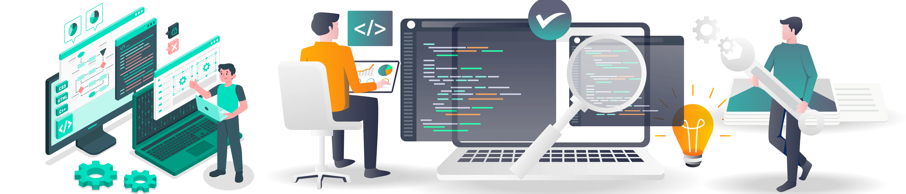Actividad 3.2: Diseño de la Interfaz de Usuario (UI) y Experiencia de Usuario (UX) (Wireframes/Mockups)
¿Qué vamos a hacer?
- Crearemos bocetos de baja fidelidad (wireframes) de las principales pantallas de nuestra aplicación, enfocándonos en la disposición de los elementos y el flujo de navegación.
- (Opcional, si hay tiempo/herramientas) Desarrollaremos mockups de mayor fidelidad que incluyan colores, tipografía e iconografía básica.
- Consideraremos principios básicos de usabilidad: ¿Es claro? ¿Es consistente? ¿Es eficiente para el usuario?
¿Por qué es importante? Para asegurar que nuestra aplicación no solo funcione bien, sino que también sea fácil y agradable de usar para nuestra comunidad.
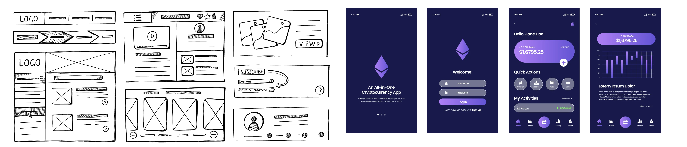Actividad 3.3: Planificación de la Estructura de Datos (si aplica, muy básico)
¿Qué vamos a hacer?
- Si nuestra aplicación necesita almacenar y recuperar información (ej. lista de usuarios, eventos, recursos), pensaremos en cómo organizaríamos esos datos de forma lógica.
- Para aplicaciones simples, esto podría ser tan sencillo como definir qué información se guarda en variables, listas o archivos de texto. Para proyectos más complejos (raro en este nivel), se podría introducir la idea de una tabla de base de datos simple.
¿Por qué es importante? Porque la forma en que se organizan los datos afecta cómo se puede acceder a ellos y cuán eficiente será la aplicación.
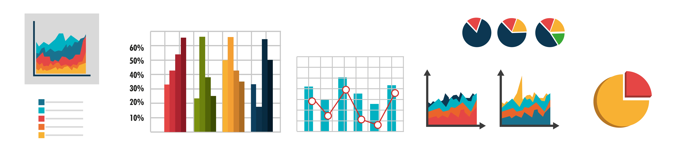Fase 4: ¡A Programar se Dijo! - Construyendo el Prototipo Funcional
Actividad 4.1: Configuración del Entorno de Desarrollo
¿Qué vamos a hacer?
- Nos aseguraremos de que todos en el equipo tengamos instalado y configurado el software necesario para programar (IDE, compilador/intérprete, librerías básicas).
- Crearemos la estructura de carpetas de nuestro proyecto.
¿Por qué es importante? Para tener una base sólida y organizada para empezar a codificar.
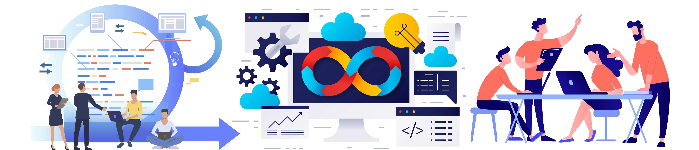Actividad 4.2: Codificación de Funcionalidades (Enfoque en el MVP)
¿Qué vamos a hacer?
- Comenzaremos a traducir nuestros algoritmos y diseños de interfaz en código real, utilizando el lenguaje de programación elegido.
- Nos enfocaremos primero en implementar las funcionalidades clave de nuestro Producto Mínimo Viable (MVP).
- Aplicaremos buenas prácticas de codificación: nombres de variables descriptivos, comentarios donde sea necesario, indentación correcta, funciones pequeñas.
¿Por qué es importante? ¡Aquí es donde nuestra solución digital cobra vida! Escribir código limpio y funcional es esencial.
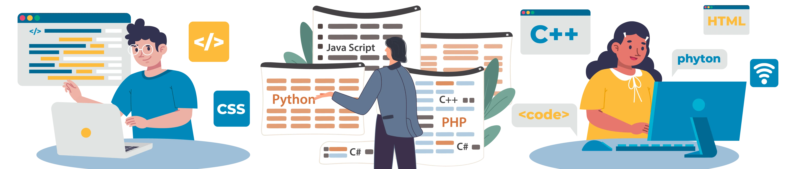Actividad 4.3: Pruebas Unitarias Básicas y Depuración (Debugging)
¿Qué vamos a hacer?
- A medida que programamos cada función o módulo pequeño, realizaremos pruebas simples ("unitarias" a nivel conceptual) para verificar que funciona como se espera con diferentes entradas.
- Aprenderemos y aplicaremos técnicas básicas de depuración para encontrar y corregir errores ("bugs") en nuestro código.
¿Por qué es importante? Para asegurar la calidad del código desde el principio y para desarrollar la habilidad crucial de encontrar y solucionar problemas en la programación.
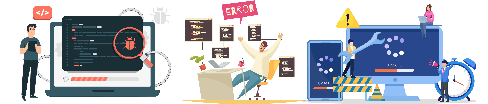Actividad 4.4: Integración de Módulos (si aplica)
¿Qué vamos a hacer?
- Si hemos desarrollado diferentes partes de la aplicación por separado (ej. la lógica del "backend" y la interfaz del "frontend", o diferentes funciones), comenzaremos a integrarlas para que trabajen juntas.
- Probaremos que la comunicación entre módulos funciona correctamente.
¿Por qué es importante? Para asegurar que todas las piezas de nuestra aplicación se ensamblan correctamente y forman un todo funcional.
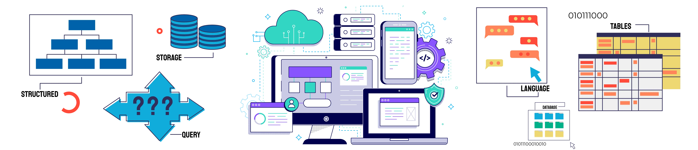Fase 5: Depurando el Futuro - Pruebas, Feedback y Argumentos de Código
Actividad 5.1: Pruebas de Funcionalidad y Usabilidad con Usuarios (MVP)
¿Qué vamos a hacer?
- Una vez que tengamos un MVP funcional, lo probaremos con usuarios reales (compañeros, profesores, miembros de la comunidad si es posible).
- Diseñaremos escenarios de prueba para que los usuarios intenten realizar tareas clave con nuestra aplicación.
- Observaremos cómo interactúan, dónde encuentran dificultades y qué comentarios tienen.
¿Por qué es importante? Para obtener retroalimentación valiosa sobre la funcionalidad y la facilidad de uso de nuestra aplicación desde la perspectiva de quienes la usarán.
Actividad 5.2: Recolección y Análisis de Feedback
¿Qué vamos a hacer?
- Sistematizaremos el feedback recibido: comentarios, problemas reportados, sugerencias.
- En equipo, analizaremos esta información para identificar los problemas más críticos o las mejoras más importantes.
¿Por qué es importante? Para tomar decisiones informadas sobre cómo mejorar nuestra aplicación basándonos en la experiencia real de los usuarios.
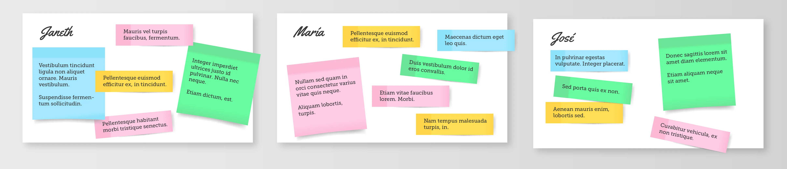Actividad 5.3: Iteración del Código y Diseño (Refactorización básica)
¿Qué vamos a hacer?
- Basándonos en el feedback y nuestro propio análisis, realizaremos cambios y mejoras en el código y/o el diseño de la interfaz.
- Podríamos necesitar corregir errores ("bugs"), mejorar la usabilidad de una pantalla, o incluso refactorizar (reestructurar) parte del código para hacerlo más claro o eficiente sin cambiar su comportamiento externo.
¿Por qué es importante? Porque el desarrollo de software es un proceso iterativo. Rara vez la primera versión es la definitiva.
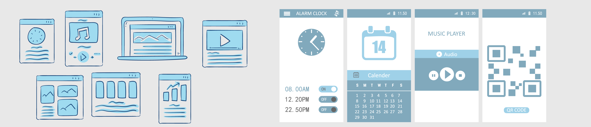Actividad 5.4: Justificación de la Lógica del Código Final
¿Qué vamos a hacer?
- Revisaremos nuestro código final y prepararemos argumentos para justificar por qué la lógica implementada es correcta y eficiente (para el alcance del proyecto) para resolver los requerimientos.
- Nos aseguraremos de poder explicar cómo funcionan las partes clave de nuestro programa.
¿Por qué es importante? Para demostrar nuestra comprensión del código que hemos escrito y para poder defender nuestras decisiones de programación.
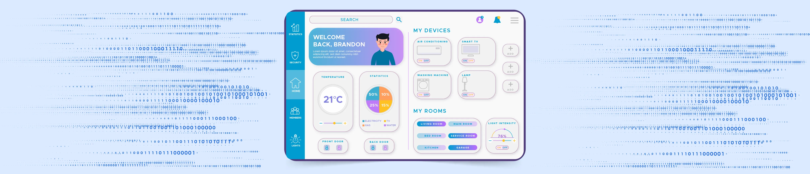Fase 6: ¡Lanzamiento Comunitario! - Presentando Nuestra Solución Digital
Actividad 6.1: Preparación de la Demostración y Material de Presentación (Pitch)
¿Qué vamos a hacer?
- Prepararemos una demostración en vivo de nuestra aplicación, enfocándonos en mostrar las funcionalidades clave y cómo resuelve el problema comunitario.
- Crearemos una presentación corta y atractiva (un "pitch") que explique: el problema, nuestra solución, el proceso de desarrollo, y el impacto potencial.
- Diseñaremos cualquier material de apoyo necesario (ej. un folleto simple, una página de "aterrizaje" web básica si es una app web).
¿Por qué es importante? Para comunicar de manera efectiva el valor de nuestro trabajo y para que otros puedan entender y apreciar nuestra solución digital.
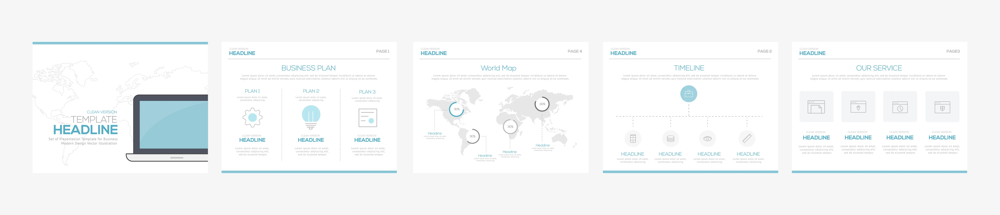Actividad 6.2: Elaboración de Guía de Usuario Básica
¿Qué vamos a hacer?
- Redactaremos una guía de usuario sencilla y clara que explique cómo instalar/acceder a nuestra aplicación y cómo usar sus funciones principales.
- Usaremos capturas de pantalla y un lenguaje accesible para el usuario final.
¿Por qué es importante? Para que las personas que no participaron en el desarrollo puedan usar nuestra aplicación fácilmente.
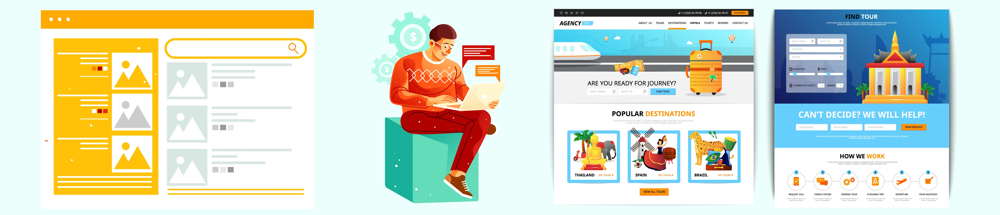Actividad 6.3: Evento de Presentación de Proyectos (Feria de Software Escolar o similar)
¿Qué vamos a hacer?
- Presentaremos nuestras soluciones de software a la comunidad escolar (compañeros, profesores, directivos) y, si es posible, a miembros de la comunidad local o usuarios potenciales.
- Realizaremos nuestras demostraciones, responderemos preguntas y recogeremos feedback final.
¿Por qué es importante? Para celebrar nuestro logro, obtener reconocimiento por nuestro esfuerzo y, potencialmente, inspirar a otros o incluso encontrar vías para que nuestra solución se use realmente.
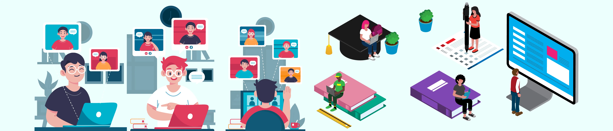Fase 7: Código Fuente de Aprendizaje - Reflexionando sobre el Viaje del Desarrollo
Actividad 7.1: Reflexión Individual y de Equipo sobre el Ciclo de Desarrollo
¿Qué vamos a hacer?
- Individualmente, escribiremos una reflexión sobre: el mayor desafío técnico que superamos, cómo aplicamos la indagación para entender al usuario, un ejemplo de argumentación lógica que usamos en nuestro código, y qué habilidad de desarrollo de software nos gustaría seguir mejorando.
- En equipo, discutiremos: ¿Qué funcionó bien en nuestro proceso de desarrollo ágil (o el que hayamos usado)? ¿Qué podríamos mejorar en la colaboración y gestión de un proyecto de software futuro? ¿Cuál fue el mayor "¡Eureka!" o momento de aprendizaje del equipo?
¿Por qué es importante? Para consolidar los aprendizajes técnicos y metodológicos, y para desarrollar la metacognición sobre nuestro proceso como desarrolladores.
Actividad 7.2: Discusión sobre Ética Digital y Futuro del Proyecto
¿Qué vamos a hacer?
- Reflexionaremos sobre las implicaciones éticas de nuestra solución: ¿Cómo maneja los datos del usuario (si aplica)? ¿Es accesible para todos los usuarios potenciales? ¿Podría tener algún impacto no deseado?
- Discutiremos si nuestro proyecto tiene potencial para continuar desarrollándose, ser publicado (ej. en una tienda de apps si es móvil y cumple requisitos, o como proyecto open source en GitHub), o ser entregado a la comunidad para su uso y posible mantenimiento.
¿Por qué es importante? Para fomentar la responsabilidad como creadores de tecnología y para pensar en el ciclo de vida completo de un producto de software.
Actividad 7.3: Celebración de los "Lanzamientos"
¿Qué vamos a hacer?
- Celebraremos el esfuerzo, la creatividad, la resolución de problemas y el aprendizaje de todos los equipos a lo largo del proyecto.
- Se pueden entregar reconocimientos simbólicos.
¿Por qué es importante? Para reconocer el arduo trabajo que implica desarrollar software y para fomentar una cultura positiva de creación y colaboración.
Recursos y Materiales
- Espacios: Laboratorio de informática con buena conexión a internet, aulas para trabajo en equipo y presentaciones.
- Equipamiento:
- Computadores con software de desarrollo instalado (IDE para Python como Thonny o VS Code, navegadores web con herramientas de desarrollador, MIT App Inventor online, editores de texto como Sublime Text o Notepad++).
- Acceso a plataformas de desarrollo web (ej. Glitch, Replit, CodeSandbox si se desarrollan apps web) o móviles.
- Dispositivos móviles para probar apps (si aplica).
- Software de diseño de interfaces (opcional, ej. Figma, Balsamiq Mockups en versión gratuita o educativa).
- Humanos: Docente facilitador con conocimientos de programación básica/intermedia en el lenguaje elegido. Posibles mentores de la industria del software (exalumnos, padres).
- Digitales: Documentación oficial de lenguajes de programación, tutoriales en línea (Codecademy, W3Schools, freeCodeCamp, canales de YouTube educativos), foros de programadores (Stack Overflow), repositorios de código (GitHub para consulta de ejemplos).
- Impresos: Guías de sintaxis del lenguaje, EBC de Tecnología e Informática y Matemáticas.
Estrategias de Evaluación
Evaluación Formativa
- Revisión de diagramas de flujo y pseudocódigo de algoritmos.
- Revisión de código por pares (code reviews) y del docente.
- Pruebas de escritorio para seguir la lógica de un algoritmo.
- Observación del proceso de depuración (debugging).
- Retroalimentación sobre el diseño de interfaces y la experiencia de usuario.
- Listas de cotejo para la argumentación sobre la elección de estructuras de datos o algoritmos.
Evaluación Sumativa
- Prototipo Funcional del Software/Aplicación: Calidad del código, cumplimiento de requerimientos funcionales y no funcionales básicos, usabilidad. (Evaluado con Rúbrica).
- Documentación del Proyecto: Especificación de requerimientos, diseño de la solución (arquitectura, diagramas de flujo/UML si aplica), manual de usuario básico, comentarios en el código. (Evaluado con Rúbrica).
- Presentación y Demostración del Software: Explicación del problema, la solución, las decisiones de diseño y programación, y demostración en vivo.
- Defensa del Código y Diseño Lógico: Capacidad de argumentar por qué se eligieron ciertos algoritmos, estructuras de control o diseños de interfaz.
Producto(s) Final(es) del Proyecto
- Prototipo funcional del software o aplicación digital (código fuente ejecutable y/o aplicación instalable/accesible online).
- Documentación Técnica y de Usuario del Proyecto:
- Documento de requerimientos y visión del producto.
- Diseño de la arquitectura y/o algoritmos clave (diagramas de flujo, pseudocódigo).
- Código fuente comentado.
- Guía de usuario básica (cómo instalar/acceder y usar las funciones principales).
- Reflexión sobre el proceso de desarrollo, desafíos y aprendizajes.
- Presentación multimedia y demostración en vivo de la solución de software, explicando su propósito, funcionamiento y el proceso de desarrollo.
Vinculación con el Contexto Comunitario y/o Global
Local: La solución está directamente diseñada para una necesidad de la comunidad escolar o local. Se buscará obtener feedback real de los usuarios potenciales durante el desarrollo y la prueba. Se podría incluso intentar un "lanzamiento beta" dentro de la comunidad.
Global: Conectar con tendencias globales en desarrollo de software con impacto social (Tech for Good), el movimiento de código abierto (Open Source), la importancia de la ética digital, la privacidad de datos, y la accesibilidad en el diseño de software.
Duración Estimada del Proyecto
Entre 10 y 14 semanas, dada la naturaleza iterativa del desarrollo de software y la necesidad de aprender/aplicar conceptos de programación. Se requiere una dedicación de 3-5 horas de clase semanales (Tecnología/Informática, con posible apoyo de Matemáticas), más trabajo autónomo significativo.
Consideraciones para la Inclusión y Equidad
- Elección del Lenguaje/Plataforma: Ofrecer opciones que se adapten a diferentes niveles de habilidad previa en programación (ej. programación por bloques como MIT App Inventor para iniciación, Python o JavaScript para un nivel intermedio).
- Roles Diversificados en el Equipo: No todos necesitan ser programadores expertos; roles como diseñador UX/UI, tester, documentador, o gestor de proyecto son igualmente importantes.
- Pair Programming (Programación por Pares): Puede ser una estrategia útil para que estudiantes con diferentes niveles de habilidad colaboren y aprendan juntos en la codificación.
- Recursos de Aprendizaje Variados: Proveer tutoriales en video, guías escritas, ejemplos de código, para diferentes estilos de aprendizaje.
- Enfoque en el MVP: Ayudar a los equipos a definir un alcance realista para su Producto Mínimo Viable para evitar frustraciones.
Rúbrica Detallada de Evaluación del Proyecto: "Código Comunitario"
| Criterio de Evaluación | Nivel Bajo (1.0 - 2.9) | Nivel Básico (3.0 - 3.9) | Nivel Alto (4.0 - 4.5) | Nivel Superior (4.6 - 5.0) |
|---|---|---|---|---|
| 1. Indagación de Necesidades y Definición de Requerimientos | Problema comunitario y requerimientos de software vagos o mal definidos. Poca investigación de usuarios/contexto. | Problema y requerimientos básicos definidos, pero con falta de profundidad en la indagación de necesidades de usuario. | Problema y requerimientos claramente definidos, basados en una buena indagación de las necesidades del usuario y el contexto. | Problema y requerimientos excelentemente definidos, con una indagación exhaustiva y empática de las necesidades del usuario y el contexto. |
| 2. Diseño Lógico y Algorítmico de la Solución de Software | Diseño lógico inexistente o con errores graves. Algoritmos ineficientes o incorrectos. Poca claridad en la estructura. | Diseño lógico simple, con algunos algoritmos funcionales pero mejorables. Estructura del software con algunas deficiencias. | Buen diseño lógico y algorítmico, con algoritmos correctos y razonablemente eficientes. Estructura del software clara y organizada. | Excelente diseño lógico y algorítmico, con algoritmos eficientes, elegantes y bien estructurados. Arquitectura de software robusta. |
| 3. Implementación (Codificación) y Funcionalidad del Prototipo | El código tiene múltiples errores graves, no compila/ejecuta, o el prototipo es apenas funcional y no cumple requerimientos. | El código es funcional pero con errores menores o comportamiento inesperado. Cumple algunos requerimientos básicos. | Código bien escrito, mayormente libre de errores, y el prototipo es funcional cumpliendo los requerimientos clave del MVP. | Código limpio, eficiente, bien comentado y robusto. Prototipo altamente funcional que excede los requerimientos del MVP. |
| 4. Argumentación sobre Diseño de Software y Lógica de Código | No se justifican las decisiones de diseño o algoritmos, o los argumentos son inválidos/basados en opiniones. | Justificaciones débiles o superficiales para el diseño y la lógica del código. Argumentación con imprecisiones. | Justifica adecuadamente las decisiones clave de diseño, algoritmos y estructuras de control con argumentos lógicos y coherentes. | Argumenta de manera rigurosa y persuasiva cada decisión crítica de diseño y lógica, demostrando profunda comprensión de los trade-offs. |
| 5. Diseño de Interfaz (UI) y Experiencia de Usuario (UX) | Interfaz confusa, poco atractiva y difícil de usar. No considera al usuario. | Interfaz funcional pero con problemas de usabilidad o estética. Consideraciones básicas de UX. | Interfaz clara, intuitiva y estéticamente agradable. Buena experiencia de usuario para las funciones principales. | Interfaz excepcional: innovadora, altamente intuitiva, visualmente atractiva y centrada en una excelente experiencia de usuario. |
| 6. Pruebas, Depuración y Calidad del Software | No se realizan pruebas sistemáticas. Muchos errores evidentes sin corregir. Código de baja calidad. | Pruebas limitadas, algunos errores persistentes. Calidad de código mejorable. | Se realizan pruebas adecuadas para las funciones clave, la mayoría de los errores se corrigen. Buena calidad de código. | Proceso de pruebas exhaustivo y bien documentado. Software robusto y con alta calidad de código. Mínimos errores. |
| 7. Colaboración, Gestión del Proyecto y Documentación | Poca colaboración, mala gestión de tareas. Documentación inexistente o muy deficiente. | Colaboración intermitente, gestión de tareas básica. Documentación superficial o incompleta. | Buena colaboración y comunicación. Gestión de tareas adecuada. Documentación clara y útil. | Excelente colaboración y liderazgo compartido. Gestión de proyecto eficiente. Documentación exhaustiva, clara y profesional. |